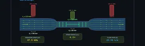
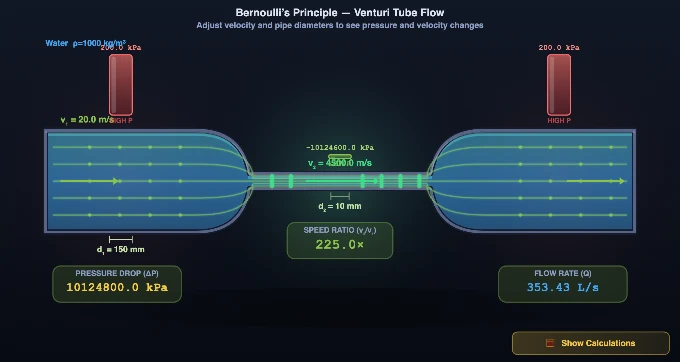

Bernoulli’s Principle Simulator
P + ½ρv² = const • Venturi Effect • Continuity Equation — Simulate • Explore • Practice • Quiz
Display Controls
1 Overview
This simulator demonstrates Bernoulli's Principle — the fundamental relationship P + ½ρv² + ρgh = constant along a streamline in steady, incompressible flow. Through an interactive Venturi tube visualisation, you can observe how fluid velocity increases and pressure decreases when a pipe narrows, and vice versa. The continuity equation (A₁v₁ = A₂v₂) ensures mass conservation, while Bernoulli's equation relates the resulting flow velocity to pressure changes.
Designed for mechanical and aerospace engineering students, fluid mechanics trainees, and physics learners, this tool covers the Venturi effect, dynamic pressure, flow rate calculation, and practical applications like Pitot tubes, spray guns, and airplane lift. Four interactive modes let you simulate, explore concepts, practise calculations, and test your knowledge.
2 Configuring the System

The simulator opens in Simulate mode showing a Venturi tube with animated streamlines. The default configuration has an inlet velocity of 3.0 m/s, wide diameter d₁ = 100 mm, and throat diameter d₂ = 50 mm. Animated streamlines show the flow accelerating through the constriction, and pressure bars visually compare the pressures at the wide section and the throat.
Each parameter has both a slider (drag for quick adjustment) and a [−] number [+] stepper (click for precise steps or type an exact value). The readout cards instantly show v₁, v₂, P₁, P₂, ΔP, Q, speed ratio, area A₁, Reynolds number, and flow regime. Try the Presets — Water Pipe, Venturi Meter, Fire Nozzle, Garden Hose, Wind Tunnel, Oil Riser — to load realistic engineering configurations in one click. Click the 🧮 Show Calculations button on the canvas to open a full step-by-step Bernoulli walkthrough for the current simulation state.
3 Simulate Mode & Controls
In Simulate mode the canvas renders an animated Venturi tube. Streamlines are colour-coded — faster regions show brighter, faster-moving dots. Pressure bars above the pipe compare static pressures at the wide and narrow sections.
- Fluid selector — Switch between Water (ρ = 1000 kg/m³), Oil (ρ = 850), Air (ρ = 1.225), and Mercury (ρ = 13 600). Each changes the Reynolds number and flow behaviour.
- Δh slider — Set a height difference (−2 to +2 m) between the wide section and the throat. This activates the gravitational term ρgΔh in Bernoulli’s equation. Use the Oil Riser preset as an example.
- Show Manometer checkbox — Overlays a U-tube manometer connecting the wide section and throat, showing the pressure difference as a fluid column height.
- Cavitation warning — A red banner appears if throat pressure P₂ drops below zero, indicating cavitation risk. Reduce velocity or increase the throat diameter to clear it.
- SI / Imperial toggle — Switch all readouts between SI (m/s, mm, kPa, L/s) and Imperial (ft/s, in, psi, gal/s). Stepper inputs also update to the selected unit system.
- 🧮 Show Calculations button — Click this button on the canvas (bottom-right) to open a detailed step-by-step Bernoulli walkthrough based on the current simulation values.
Keyboard shortcuts: Right-click the canvas to access Export PNG, Export CSV, and Reset Defaults.
4 The Underlying Theory
Switch to Explore mode to browse concept cards across three categories: Fundamentals, Applications, and Calculations. Fundamentals covers Bernoulli's equation derivation, the continuity equation for incompressible flow, static versus dynamic pressure, and the assumptions behind the equation (steady, inviscid, incompressible flow along a streamline).
The Applications category explains airplane lift (faster air over the wing creates lower pressure), Pitot tubes for airspeed measurement, Venturi meters for pipe flow measurement, carburettors, atomisers, and spray nozzles. The Calculations category provides worked examples showing how to compute throat velocity from the continuity equation and pressure drops from Bernoulli's equation. Each card includes formulas, diagrams, and numerical examples to reinforce your understanding of flow velocity and pressure relationships.
5 Try a Problem
Practice mode generates random fluid mechanics problems involving Bernoulli's equation and the continuity equation. You might be asked to find the throat velocity given inlet conditions and diameter ratio, calculate the pressure drop across a constriction, or determine the flow rate from measured pressures. Enter your answer and click Check for immediate feedback. Your running score tracks your progress.
Quiz mode presents five questions per session, combining conceptual and numerical problems. Topics include the Venturi effect, the relationship between flow area and velocity, pressure-velocity trade-offs, and real-world applications. After completing the quiz, review your results to identify areas for further study. This is valuable preparation for fluid mechanics examinations covering Bernoulli's equation and pipe flow analysis.
6 Engineering Notes
- Remember that Bernoulli's equation applies along a streamline in steady, inviscid, incompressible flow. Real flows with viscosity, turbulence, or compressibility require corrections.
- The continuity equation A₁v₁ = A₂v₂ means velocity scales with the inverse of area. Since area scales with diameter squared, halving the diameter quadruples the velocity.
- Watch the pressure bars — they give immediate visual feedback about where pressure is high versus low. Faster flow always means lower static pressure.
- Use the Presets to quickly compare different engineering scenarios. The Fire Nozzle preset shows extreme acceleration; the Oil Riser preset demonstrates the gravitational term ρgΔh in action.
- Use the SI / Imperial toggle to practice with the unit system used in your course or workplace. All readout cards and stepper inputs switch together.
- Right-click on the canvas at any time to export a PNG snapshot or a CSV file with all calculated values in both SI and Imperial units.
- If a red cavitation warning appears, the throat pressure has gone negative — this is physically impossible in a real liquid. Reduce inlet velocity or increase d₂ to bring P₂ back above zero.
- Pair this tool with the Fluid Flow Simulator to study Reynolds number, friction losses, and turbulent flow — effects that Bernoulli's ideal equation does not account for.
Understanding Bernoulli’s Principle — Free Interactive Simulator

A classroom trick I use every term: hold a sheet of paper by its edge and blow across the top. The paper lifts. Students predict it should push down. Same physics as a Venturi throat — faster air on one side, lower pressure, net force toward the fast side. Spend two minutes on this demonstration before any equations and Bernoulli stops feeling abstract.
Bernoulli’s Principle is one of the most important concepts in fluid mechanics. It states that for an ideal, incompressible fluid in steady flow, the sum of static pressure, dynamic pressure (½ρv²), and hydrostatic pressure (ρgh) remains constant along a streamline. In practical terms: where fluid flows faster, pressure drops. This relationship is expressed as P + ½ρv² + ρgh = constant.
How does the Venturi effect work with the continuity equation?
When fluid flows through a pipe that narrows (a Venturi tube), the continuity equation A₁v₁ = A₂v₂ tells us the fluid must speed up in the constriction to maintain the same flow rate. By Bernoulli’s principle, this increased velocity causes a pressure drop at the throat. The pressure difference is ΔP = ½ρ(v₂² − v₁²). This Venturi effect is the basis for flow measurement devices, carburettors, atomisers, and many other engineering applications.
What are real-world applications of Bernoulli’s Principle?
Bernoulli’s principle explains airplane lift (faster air above the wing creates lower pressure), Pitot tubes (measuring airspeed from pressure difference), Venturi meters (measuring flow rate in pipes), and spray guns (using low pressure to draw liquid upward). Understanding these applications is essential for mechanical, aerospace, and civil engineering students.
How do I use this Bernoulli’s Principle simulator?
In Simulate mode, use the velocity slider or [−][+] stepper to change inlet speed. Adjust pipe diameters d₁ and d₂ using sliders or steppers. Use the Fluid selector to switch between Water, Oil, Air, and Mercury, and the Δh slider to add height differences. Toggle SI or Imperial units at any time. Click the 🧮 Show Calculations button on the canvas to see a full step-by-step Bernoulli walkthrough for the current values. Use the Export bar to download a PNG snapshot or CSV of all results. Switch to Explore to study 14 concepts, Practice for random fluid mechanics problems, or Quiz for 5-question sessions.
Where Bernoulli Comes From — Energy Conservation Along a Streamline
Bernoulli’s equation is not a separate physical law — it is the work-energy theorem applied to an ideal fluid element travelling along a streamline. Take a small parcel of fluid, follow it from point 1 to point 2, and write its total mechanical energy per unit volume:
pressure work + kinetic energy + gravitational PE = constant
P + ½ρv² + ρgh = const
The equation rests on five assumptions that students forget at their peril: steady flow, incompressible fluid, inviscid (no friction), along a single streamline, and no shaft work (no pump or turbine between the two points). When any of these fails, the extended form adds a head-loss term hL. The simulator’s ideal-flow assumption holds well for short pipe sections, smooth contractions like a Venturi, and air below about Mach 0.3.
Worked Example — Pressure Drop Across a 100 mm → 50 mm Venturi
Water at 20 °C (ρ = 1000 kg/m³) flows steadily through a horizontal pipe that contracts from 100 mm to 50 mm inside diameter. Inlet velocity v1 = 3.0 m/s, inlet pressure P1 = 200 kPa. Load the matching configuration and watch the readout match these numbers:
| Step | Quantity | Working | Result |
|---|---|---|---|
| 1 | Inlet area A1 | π·(0.050)² | 7.85×10−3 m² |
| 2 | Throat area A2 | π·(0.025)² | 1.96×10−3 m² |
| 3 | Throat velocity (continuity) | v2 = v1(A1/A2) = 3.0 × 4 | 12.0 m/s |
| 4 | Dynamic head difference | ½ρ(v2² − v1²) = ½(1000)(144 − 9) | 67.5 kPa |
| 5 | Throat pressure | P2 = P1 − 67.5 | 132.5 kPa |
| 6 | Flow rate | Q = A1v1 = A2v2 | 0.0236 m³/s = 23.6 L/s |
Two intuitions to take away: (i) halving the diameter quadruples velocity, which means the dynamic-head jump scales like 16−1 = 15 — that is why even modest constrictions create dramatic pressure changes; (ii) the simulator’s flow-rate readout should be identical at either cross-section. If it is not, the inputs violate continuity.
When Bernoulli Breaks Down
- Long pipes — viscosity matters. In a 50 m garden hose at 2 m/s, viscous head loss (Darcy–Weisbach: hL = f·(L/D)·v²/2g) can exceed the dynamic head. Estimate f with the Reynolds Number simulator first, then add hL.
- Air above Mach 0.3 — compressibility matters. Density falls as air accelerates through a contraction. For aircraft pitot-static instruments above ~350 km/h the incompressible form under-reads airspeed by 2–3%; engineers use the compressible Bernoulli equation derived for a perfect gas.
- Turbulent jets — not a single streamline. Bernoulli only holds along a streamline. Across a turbulent mixing layer, lateral momentum transfer breaks the assumption entirely.
- Across a pump or fan — shaft work matters. Pump head Hp appears on the right as added energy per unit weight: P1/ρg + v1²/2g + z1 + Hp = P2/ρg + v2²/2g + z2.
- Cavitation — pressure falls below vapour pressure. If P2 dropped below ~2.3 kPa (saturated vapour pressure of water at 20 °C), the liquid would flash to vapour, eroding the throat. This is the limit of pump suction and propeller design.
Where Engineers Use Bernoulli Every Day
- Pitot-static tubes — every airliner measures airspeed by reading stagnation pressure P0 minus static pressure P; the difference is ½ρv², so v = √(2ΔP/ρ).
- Venturi flowmeters — ISO 5167-4 standardises the discharge coefficient Cd ≈ 0.985 for a classical Venturi; mass flow rate becomes ṁ = Cd·A2·√(2ρΔP/(1−(A2/A1)²)).
- Carburettors & spray atomisers — a Venturi throat in the air path produces local low pressure that draws fuel or paint up from a reservoir.
- Wing lift (qualitatively) — air accelerates over a curved upper surface, lowering pressure; the integrated pressure difference is lift.
Selected References
- Cengel, Y. A. & Cimbala, J. M. — Fluid Mechanics: Fundamentals and Applications, 4th ed., McGraw-Hill, Chapter 5.
- White, F. M. — Fluid Mechanics, 8th ed., Chapter 3 (Integral Relations) and Chapter 6 (Pipe Flow).
- ISO 5167-4:2003 — Measurement of fluid flow by means of pressure differential devices — Part 4: Venturi tubes.
What is the Bernoulli’s Equation formula?
| Parameter | Formula | Description |
|---|---|---|
| Bernoulli’s Equation | P + ½ρv² + ρgh = const | Energy conservation along a streamline |
| Venturi Effect | v2 = v1 × (A1/A2) | Velocity increases where area decreases |
| Dynamic Pressure | q = ½ρv² | Kinetic energy per unit volume |
| Total (stagnation) Pressure | P0 = P + ½ρv² | Static + dynamic pressure |
| Flow Rate (continuity) | Q = A × v | Volume flow rate (m³/s) |
| Pressure Difference | ΔP = ½ρ(v2² − v1²) | Pressure drop due to velocity change |
Explore Related Simulators
If you found this Bernoulli’s Principle simulator helpful, explore our Fluid Flow simulator, Viscosity Experiment Virtual Lab, Pascal’s Law simulator, and the aerodynamics simulator for more hands-on practice.